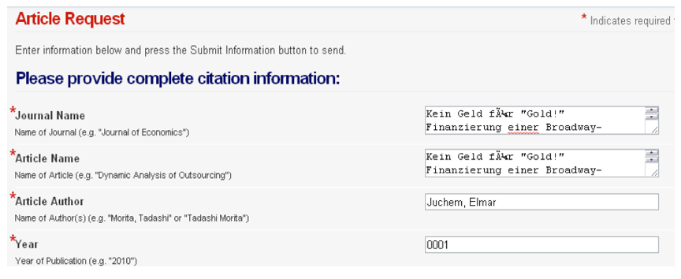

How much do availability studies increase full text success?
Sanjeet Mann
Arts & Electronic Resources Librarian, University of Redlands
SCELC Research Day
March 4, 2014
Availability studies
Defined as a research method replicating the steps that library users take from a citation to full text (or an error)
Electronic resource infrastructure

Example
